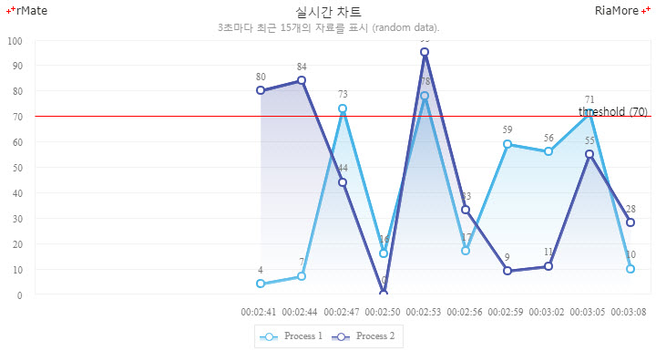
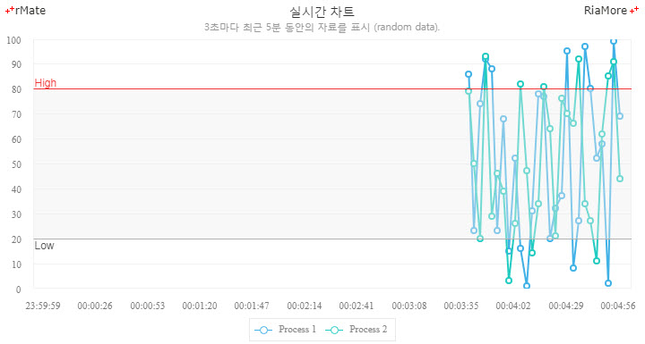

실시간 차트
실시간 차트는 실시간으로 변동되는 데이터를 모니터링하기에 유용한 차트입니다.
실시간 차트는 <RealTimeChart> 노드를 정의하여 생성할 수 있으며, 적용 가능한 데이터 시리즈는
<Column2DSeries>, <Column3DSeries>, <Line2DSeries>, <Area2DSeries> 입니다.
데이터는 원격 호출(RPC, Remote Procedure Call) 방식으로 서버에서 읽어와서 차트에 로드됩니다.
실시간 차트는 현재 화면에 어느 시점의 데이터가 표시되는지에 따라서 다음 두 유형으로 구분할 수 있습니다.
- 데이터의 개수: 서버나 기타 경로를 통하여 데이터를 받으면 차트는 화면 우측 끝에서부터 즉시 데이터를 표시하기 시작해서 displayDataSize 속성값에 설정된 수만큼 한 화면에 표시합니다.
이후에는 데이터가 하나씩 로드될 때마다 좌측 끝의 오래된 데이터는 쉬프트되어 사라집니다.
- 시간: 서버나 기타 경로를 통하여 데이터를 받으면 차트는 화면 우측 끝에서부터 즉시 데이터를 표시하기 시작해서 timePeriod 속성값에 설정된 시간 범위내에 있는 데이터들을 한 화면에 표시합니다.
이후에는 데이터가 하나씩 로드될 때마다 좌측 끝의 오래된 데이터는 쉬프트되어 사라집니다.
실시간 차트의 두 가지 유형에 대한 설정과 관련된 <RealTimeChart> 노드의 속성은 다음과 같습니다.
| 속성명 |
유효값 (*: 기본값) |
설명 |
| dataDisplayType |
dataSize(*), time
|
차트의 화면에 표시되는 데이터 개수의 기준을 설정합니다.
dataSize: displayDataSize 속성에 지정된 개수의 데이터를 화면에 표시합니다.
time: timePeriod 속성에 지정된 시간 범위 내의 데이터를 표시합니다.
|
| displayDataSize |
숫자
기본값: 20
|
dataDisplayType 속성이 “dataSize” 일 경우, 화면에 표시할 데이터의 개수를 지정합니다.
|
| interval |
숫자 (second)
|
입력되는 데이터의 주기를 지정합니다.
dataDisplayType 속성이 “time” 일 경우에만 유효합니다.
|
| timePeriod |
숫자 (second)
|
dataDisplayType 속성이 “time” 일 경우, 화면에 표시할 데이터의 시간 범위를 지정합니다.
|
원격 호출(RPC, Remote Procedure Call)에 의한 데이터 로드는 <HttpServiceRepeater> 노드에 의해서 이루어 집니다.
다음은 <HttpServiceRepeater> 노드 설정시 유의해야 할 사항입니다.
<?xml version="1.0" encoding="utf-8" ?>
<items> // XML 의 루트 노드는 <items> 이어야 합니다.
<item> // 한 데이터 셋은 <items> 노드로 정의해야 합니다.
<Time>13:8:27</Time> // 사용자가 원하는 형태로 작성합니다.
<Volume>5527</Volume>
<Price>309</Price>
</item>
</items>
<HttpServiceRepeater> 노드에서 사용 가능한 속성은 다음과 같습니다.
| 속성명 |
유효값 (*: 기본값) |
설명 |
| interval |
숫자 (second)
default: 30
|
RPC 요청 주기(초 단위)를 지정합니다.
|
| target |
텍스트
|
<RealTimeChart> 노드의 id 속성값을 지정합니다.
|
| url |
텍스트
|
RPC 요청을 보낼 URL 을 지정합니다.
|
| useFaultAlert |
true(*), false
|
원격 호출 (RPC)이 실패할 경우 경고 메시지를 표시할 지 여부를 설정합니다.
|
데이터 개수 기준 실시간 차트
다음은 데이터 개수를 기준(dataDisplayType = “dataSize”)으로 설정한 실시간 차트를 생성하는 코드와 이를 적용해서 출력한 차트의 예제입니다.
이 예제에서는 화면에 표시되는 데이터의 개수를 15(displayDataSize = “15”)로 설정하였습니다.
그리고 실시간 차트에서는 setData() 함수를 호출하지 않고 예제에서와 같이 setLayout() 함수만 호출합니다.
function chartReadyHandler(id) {
document.getElementById(id).setLayout(layoutStr);
}
<RealTimeChart id="chart" dataDisplayType="dataSize" displayDataSize="15" showDataTips="true">
...
<Area2DSeries labelPosition="up" yField="P1" displayName="Process 1" itemRenderer="CircleItemRenderer"/>
<Area2DSeries labelPosition="up" yField="P2" displayName="Process 2" itemRenderer="CircleItemRenderer"/>
...
</RealTimeChart>
<HttpServiceRepeater url="https://www.koolchart.com/realtimeSample/process3Data.php" target="{chart}" interval="3" method="get"/>

See the CodePen 알메이트 차트 - 데이터 개수 기준 실시간 차트
시간 기준 실시간 차트
다음은 시간을 기준(dataDisplayType = ”time”)으로 설정한 실시간 차트를 생성하는 코드와 이를 적용해서 출력한 차트의 예제입니다.
이 예제에서는 화면에 표시되는 데이터의 시간 범위를 300초 (timePeriod = “300”)로 설정하였습니다.
그리고 실시간 차트에서는 setData() 함수를 호출하지 않고 예제에서와 같이 setLayout() 함수만 호출합니다.
function chartReadyHandler(id) {
document.getElementById(id).setLayout(layoutStr);
}
<RealTimeChart id="chart" dataDisplayType="time" timePeriod="300" interval="3" showDataTips="true">
...
<Line2DSeries xField="Time" yField="P1" displayName="Process 1" radius="4" itemRenderer="CircleItemRenderer">
...
</RealTimeChart>
<HttpServiceRepeater url="https://www.koolchart.com/realtimeSample/process3Data.php" target="{chart}" interval="3" method="get"/

See the CodePen 알메이트 차트 - 시간 기준 실시간 차트
<HttpServiceRepeater>를 이용한 차트 자동 갱신
<HttpServiceRepeater> 노드를 항상 <RealTimeChart> 노드와 함께 적용할 필요는 없습니다.
일반적인 차트라도 일정한 시간 간격을 가지고 데이터를 주기적으로 갱신(Refresh)하고자 할 경우에는 <HttpServiceRepeater> 노드를 사용할 수 있습니다.
이 때 chart 노드의 id 속성값은 <HttpServiceRepeater> 노드의 target 속성값과 반드시 일치시켜야 합니다. (<Column3DChart id="chart" ...>, <HttpServiceRepeater target="{chart}" ...>)
다음은 <Column3DChart> 노드와 <HttpServiceRepeater> 노드를 함께 적용한 코드의 예제입니다.
<rMateChart cornerRadius="12" borderStyle="solid">
<Column3DChart id="chart" showDataTips="true">
<horizontalAxis>
<CategoryAxis categoryField="Month" />
</horizontalAxis>
<series>
<Column3DSeries yField="Profit" displayName="Profit">
<showDataEffect>
<SeriesInterpolate />
</showDataEffect>
</Column3DSeries>
</series>
</Column3DChart>
<HttpServiceRepeater url="http://demo.riamore.net/chartTest/singleData.jsp" target="{chart}" interval="60"/>
</rMateChart>